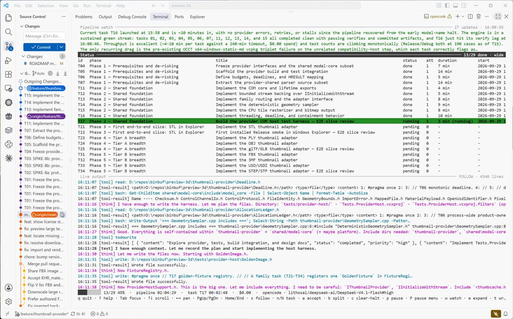

Multiple LLM providers
Claude Code, Cursor, OpenCode (1.x), Codex CLI, Gemini CLI and Antigravity — plus a fake provider for testing the harness itself.
A powerful LLM task harness that drives long horizon tasks with the LLM provider and client of your choice.
Developer tools · CLI

What's inside
Claude Code, Cursor, OpenCode (1.x), Codex CLI, Gemini CLI and Antigravity — plus a fake provider for testing the harness itself.
Each session gets only its task file, a PROGRESS digest, the design docs it names and a generated repo index. No context rot, no hidden state.
A per-task verify:, a configured verifyCommand or your project’s test script runs after every done. A failed verify demotes the task.
Retry and halt policies, per-task and per-run cost caps, max iterations and tasks, a STOP sentinel and lifecycle hooks.
State files, roadmap markers, and every session’s prompt, rendered log and raw NDJSON saved for review.
Scope each session to the MCP servers its task needs, so unrelated toolchains cost nothing.
Getting started
Clone the repository next to your other repos, then run ./install.sh /path/to/project on macOS or Linux, or ./install.ps1 -Target C:\path\to\project on Windows. It builds the harness and copies it to <project>/.symphony/.
./.symphony/symphony init scaffolds the docs skeleton. doctor checks Node, git, the roadmap, provider auth and your verify command before anything runs.
./.symphony/symphony run works the roadmap in order, committing after each task. Start with brief if you only have an idea, or start + attach for a detached run.
git clone https://github.com/binbuf/symphony.git cd symphony ./install.sh /path/to/your/project cd /path/to/your/project ./.symphony/symphony init ./.symphony/symphony doctor ./.symphony/symphony run
git clone https://github.com/binbuf/symphony.git Set-Location symphony ./install.ps1 -Target C:\path\to\your\project Set-Location C:\path\to\your\project ./.symphony/symphony.ps1 init ./.symphony/symphony.ps1 doctor ./.symphony/symphony.ps1 run
Under the hood
The harness owns a small, stack-agnostic planning format: a roadmap of task bullets, a progress notebook, per-task files with acceptance criteria, design docs and ADRs, and per-task run logs. Commands include init, doctor, lint, prepare, run, status, accept, reset, nudge, split, replan and clear-halt.
symphony FAQ
Claude Code, Cursor, OpenCode (1.x; 2.x is not supported yet), Codex CLI, Gemini CLI and Google Antigravity. A built-in fake provider replays fixtures so you can test the harness without spending anything.
Node 20.11 or later and git, on Windows, macOS or Linux. The doctor command checks both, along with your roadmap, provider auth and verify command, before a run starts.
symphony itself is free. You pay your provider for the sessions it runs, and per-task and per-run cost caps can halt a run before it spends more than you allow.
It is built to run unattended: provider permission prompts are bypassed by default, work is committed per task, and a STOP sentinel pauses at the next task boundary. Pass --safe to restore prompts for a run.
The harness installs to a .symphony/ folder in the project root, which the installer adds to your .gitignore. Plans and logs live in the project’s docs/ folder and are committed with the work.
The source is public on GitHub and the project is built in the open. A formal license has not been published yet, so treat it as source-available for now.
Keep browsing